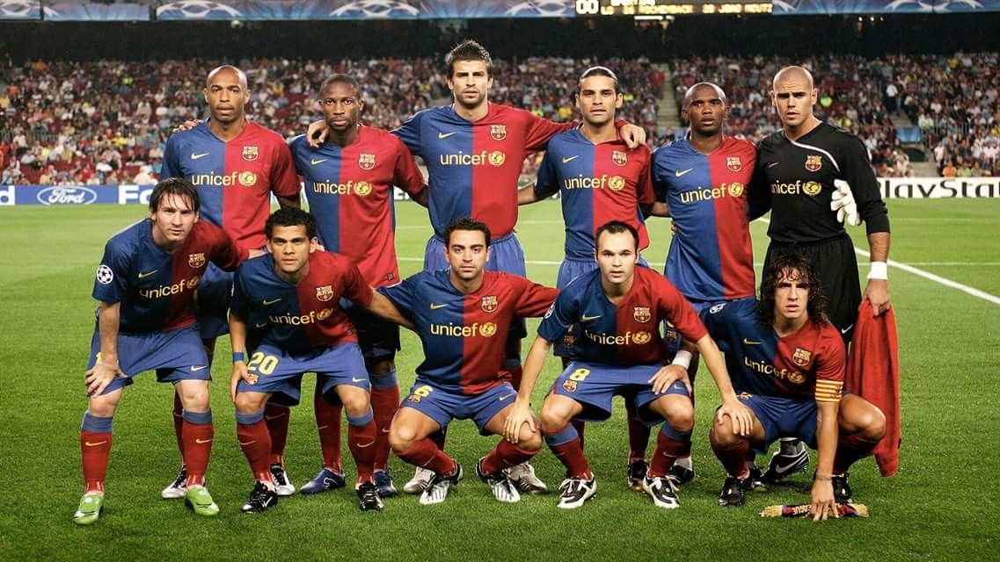
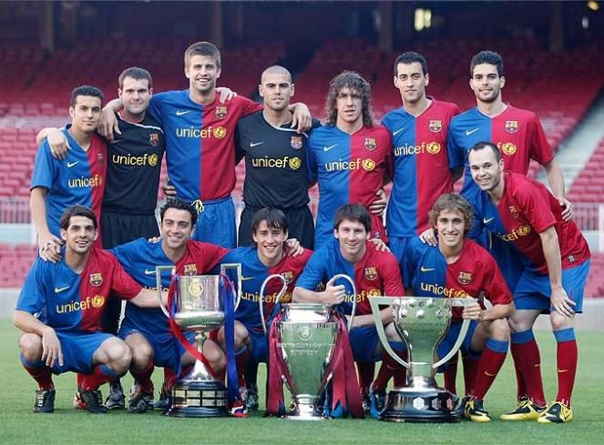

Bienvenidos a nuestro blog, donde vamos a hablar sobre uno de los equipos más exitosos de la historia del fútbol, el FC Barcelona de la temporada 2008-2009. Esta temporada fue especialmente importante para el equipo, ya que bajo la dirección del entrenador Pep Guardiola, el Barcelona logró alcanzar uno de los mayores logros en la historia del fútbol: el triplete español, al ganar la Liga de Campeones de Europa, La Liga Española y la Copa del Rey. Además, el equipo jugó un juego impresionante, con una combinación de ataque y defensa sólida, y un gran desempeño de jugadores como Lionel Messi, Xavi, Andrés Iniesta y Dani Alves. A través de este blog, vamos a analizar los partidos, las estrategias, los jugadores y los momentos clave de la temporada 2008-2009 del FC Barcelona, y también te mantendremos informado sobre cualquier noticia relacionada con el equipo. ¡Únase a nosotros en esta emocionante aventura y no se pierda ningún detalle de la historia del FC Barcelona!
El FC Barcelona tuvo un impresionante recorrido en la UEFA Champions League 2008-2009. El equipo dirigido por Pep Guardiola, logró avanzar hasta la final del torneo, donde enfrentó al Manchester United. En la final, disputada en el Estadio Olímpico de Roma, Barcelona venció al Manchester United con un marcador de 2-0, con goles de Samuel Eto'o y Lionel Messi. Con ese triunfo, el Barcelona se convirtió en el primer equipo español en ganar la Liga de Campeones en la historia del fútbol. Además, ese año el equipo también ganó la liga española y la Copa del Rey, logrando el triplete español. El juego del equipo fue espectacular, con una combinación de ataque y defensa sólida, y un gran desempeño de jugadores como Lionel Messi, Xavi, Andrés Iniesta y Dani Alves. Sin duda, una temporada memorable para el FC Barcelona.
